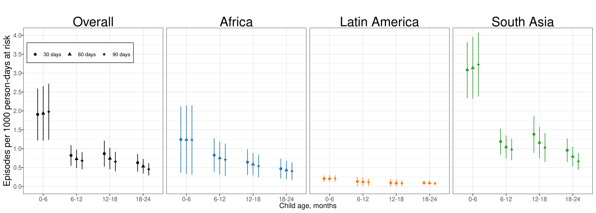

Stunting Supplementary Information
1
Overview
2
Sensitivity analysis using fixed effects
2.1
Overview
2.2
Age-specific prevalence
2.2.1
Random effects
2.2.2
Fixed effects
2.3
Age-specific incidence
2.3.1
Random effects
2.3.2
Fixed effects
2.4
Age-specific incidence rate
2.4.1
Random effects
2.4.2
Fixed effects
2.5
Age-specific recovery
2.5.1
Random effects
2.5.2
Fixed effects
2.6
Age-specific prevalence of severe wasting
2.6.1
Random effects
2.6.2
Fixed effects
2.7
Age-specific longitudinal prevalence of persistent wasting
2.7.1
Random effects
2.7.2
Fixed effects
2.8
Age-specific prevalence of concurrent wasting and stunting
2.8.1
Random effects
2.8.2
Fixed effects
3
Cohort-specific estimates
3.1
Overview
3.2
Age-specific prevalence
3.3
Age-specific prevalence of severe wasting
3.4
Age-specific longitudinal prevalence of persistent wasting
3.5
Age-specific prevalence of concurrent wasting and stunting
3.6
Age-specific prevalence of underweight (weight-for-age Z-score < -2)
4
Sensitivity analysis dropping at-Birth measures in Kenaba
4.1
Overview
4.2
Mean WLZ by region
4.3
Age-specific prevalence
4.4
Age-specific incidence
4.5
Age-specific incidence rate
4.6
Age-specific recovery
4.7
Age-specific prevalence of severe wasting
4.8
Age-specific longitudinal prevalence of persistent wasting
4.9
Age-specific prevalence of concurrent wasting and stunting
4.10
Age-specific prevalence of underweight (weight-for-age Z-score < -2)
5
Sensitivity analysis comparing wasting defined via weight-for-length versus middle-upper arm circumference
5.1
Overview
6
Anthropometry measurement quality
6.1
Overview
6.2
Anthropometry measuresments compared to WHO standards
6.3
Age-specific incidence
7
IR-Sensitivity
7.1
Figure
Published with bookdown
Supplement to Longitudinal analysis of child wasting and concurrence with stunting in low-resource settings
Chapter 7
IR-Sensitivity
7.1
Figure
